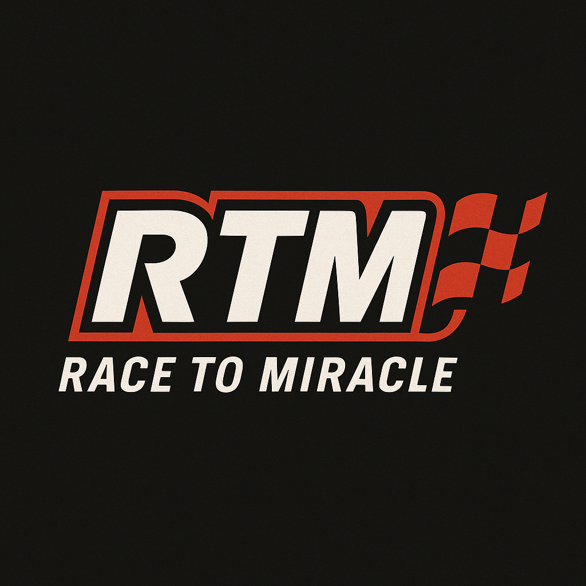

"START YOUR RACE. SHIFT YOUR FUTURE."
단순 암기는 결국 무너집니다. 내신과 수능을 관통하는 본질적 원리 이해를 통해 어떤 변형 문제도 뚫어낼 힘을 기릅니다.
"수학 시간은 지루하다"는 편견을 깹니다. 아이들이 시간 가는 줄 모르고 빠져드는 흡입력 있는 강의를 약속합니다.
강의만 하고 끝내지 않습니다. 지치지 않고 수능장까지 완주할 수 있도록, 멘탈과 학습 밸런스를 끝까지 책임지고 관리합니다.
위로만 하는 수업은 하지 않습니다.
아이가 스스로 다시 걸어갈 수 있는 힘을 기르는 것,
그것이 RTM이 생각하는 진짜 교육입니다.
RTM은 단순히 위로하는 곳이 아닙니다.
학생은 왕이 아니라, 자신의 레이스를 책임지는 선수입니다.
우리는 완벽한 서포트를 제공하지만, 그만큼의 책임을 요구합니다.
박원욱T와 함께 기적을 만든 대학들
현재 기적을 만들어낸 학생들의
소중하고 생생한 이야기를 모으고 있습니다.
가장 진솔하고 뜨거운 후기들로
곧 찾아뵙겠습니다.
(2026학년도 합격생 인터뷰 준비 중)
* 이미지는 깃허브에 올린 파일명이나 이미지 주소를 입력하세요.
* 2026. 01. 13. 기준 진도 현황
학생 이름과 비밀번호를 입력하세요.